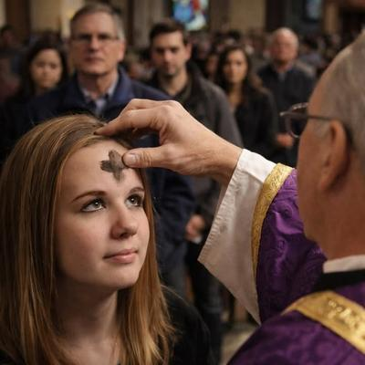

¿No es esto contradictorio? Sí, pero no es nada de extrañarse en las religiones. Cada año en España y gran parte de Hispanoamérica, ocurre la misma escena: personas vestidas para ir al trabajo, a la universidad o para hacer compras cotidianas, caminan por la ciudad con una cruz de ceniza dibujada en la frente; en señal de penitencia, pero a la vez con una especie de orgullo grupal. Y no es un accidente, ni una broma, ni maquillaje artístico: es Miércoles de Ceniza, el día que comienza la Cuaresma, es decir, los cuarenta días previos a la llamada «Pascua de Resurrección», «Pascua Florida» o «Domingo de Resurrección» (la Pascua cristiana). Se supone que es un período destinado a la «preparación espiritual» de los cristianos para la celebración de la supuesta resurrección de Jesús, durante el cual realizan diversos tipos de «penitencia». El día anterior correspondió al Martes de Carnaval o Mardi Gras, el último día del Carnaval, que es un período festivo de origen precristiano, celebrado por diferentes culturas, en que se practica todo tipo de excesos, para en el caso de los cristianos, a partir de hoy Miércoles de Ceniza, buscar el arrepentimiento y la reconciliación con «Dios».


Desde una mirada antropológica —y crítica— el fenómeno es sin duda interesante: una marca ritual visible que convierte la identidad religiosa en señal pública; un recordatorio corporal de culpa, mortalidad, pero a la vez de pertenencia comunitaria.
Ya en el siglo IV existía la idea de un período de «preparación espiritual» antes de la celebración de la supuesta resurrección de Jesús. Pero el detalle curioso es que originalmente no comenzaba en miércoles sino en domingo (porque la resurrección también se celebra un domingo). El problema es que los domingos eran considerados días festivos, y no se ayunaba. Así que entre los siglos VI y VII, cuando el ayuno penitencial se volvió central, la Iglesia movió el inicio de la cuaresma para el miércoles anterior, para que así cuadraran las cuentas penitenciales. Y de esta forma nació el primer Miércoles de Ceniza: no por revelación divina, sino por logística litúrgica.
¿Y por qué ceniza? —Se supone que es una práctica que expresa arrepentimiento y culpa, siendo considerada como una especie de «pago» por algo «malo» que la persona cree que hizo. Ya los hebreos acostumbraban a manifestar su humillación, luto y arrepentimiento cubriéndose la cabeza de ceniza. Eso equivalía a reconocerse culpable ante la divinidad. La Biblia menciona por ejemplo un episodio en que Judit cayó «rostro en tierra», y «echó ceniza sobre su cabeza», para humillarse ante su dios Yahvé-Jehová (Judit 9:1, Biblia de Jerusalén). Y según los evangelios, el mismo Jesús esperaba que la gente realizara estas humillantes prácticas penitentes o de arrepentimiento, «en ceniza» (Mateo 11:21). Pero además, el Miércoles de Ceniza es una ocasión propicia para recordar aquella frase bíblica de: «polvo eres, y al polvo volverás» (Génesis 3:19). Así que el sacerdote marca una cruz en la frente del creyente mientras pronuncia esa frase. O sea que el cristianismo heredó esa simbología y la institucionalizó.
¿Y de dónde sale la ceniza? —Resulta de quemar los ramos «bendecidos» que se usaron el año anterior para la procesión y misa del Domingo de Resurrección o Domingo de Ramos.
Pero, ¿quiénes practican este rito? —No es exclusivo de los católicos, también lo practican los anglicanos, los luteranos, los metodistas, los presbiterianos y hasta algunos bautistas. Sin embargo, en la cultura iberoamericana el fenómeno visible es sobre todo entre los católicos: millones de personas reciben la cruz en la frente hoy, y luego continúan su vida diaria portándola todo el día (como penitencia, pero a la vez con cierto orgullo).
Porque para ellos no se trata de una simple marca con ceniza, sino de un símbolo que cumple una función social: de identidad, culpa y pertenencia. Y esto, desde el punto de vista antropológico resulta interesante, puesto que esa cruz cumple varias funciones simultáneas:
Es una marca de identidad grupal. Una señal pública de afiliación. Porque no basta creer, hay que demostrarlo.
Es un ritual de culpa colectiva. La ceniza simboliza arrepentimiento, incluso antes de un pecado concreto. Porque se participa en una deuda moral abstracta heredada.
Es un recordatorio de la mortalidad humana. El «volverás al polvo» funciona como pedagogía emocional: someter al individuo recordándole su pequeñez ante la autoridad religiosa.
Es una forma de normalización social. Cuando miles lo hacen, el gesto —absurdo por sí mismo— deja de parecer extraño y se convierte en una tradición «respetable».
Lo curioso es que, en sociedades históricamente católicas, el Miércoles de Ceniza tiene un componente especialmente visible: personas con traje de oficina, uniforme escolar o ropa cotidiana, que llevan la cruz marcada en su frente durante toda la jornada. Algo que no es necesario hacer… pero que se hace. Y ese detalle es clave: la religión deja de ser interior para convertirse en acto performativo. Algo que desde la perspectiva antropológica se llama «ritual de señalización»: un comportamiento costoso o incómodo que demuestra pertenencia auténtica al grupo.
Al final, lo interesante no es si alguien cree o no cree, sino por qué el ritual sigue funcionando. Porque no es algo que depende de evidencia, sino de emociones profundas: miedo a la muerte, necesidad de comunidad, sentimiento de culpa heredado, y deseo de reconocimiento social. La ceniza no prueba en realidad nada sobrenatural, pero sí revela algo muy humano: la necesidad de convertir ideas abstractas en acciones físicas.
Resumamos diciendo que el Miércoles de Ceniza no nació de ningún mandato divino, sino por ajustes prácticos del calendario litúrgico, y herencia cultural de antiguas prácticas penitenciales. Sin embargo, siglos después sigue vigente, porque satisface funciones psicológicas y sociales muy reales. Cada cruz en la frente es menos una señal del cielo… y más una huella de la historia humana: de nuestra tendencia a materializar la culpa, a ritualizar la pertenencia y a convertir la mortalidad en ceremonia.
Pero en definitiva, la ceniza no conecta al creyente con lo eterno. Lo conecta con algo mucho más comprobable: la tradición.
[Godless Freeman]
Comentarios
Comments powered by Disqus